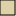

<!doctype html>
<html lang="en">
<head>
    <meta charset="utf-8">
    <meta http-equiv="X-UA-Compatible" content="IE=edge">
    <meta name="viewport" content="initial-scale=1,user-scalable=no,maximum-scale=1,width=device-width">
    <meta name="mobile-web-app-capable" content="yes">
    <meta name="apple-mobile-web-app-capable" content="yes">
    <link rel="stylesheet" href="https://unpkg.com/leaflet@1.9.4/dist/leaflet.css"
        integrity="sha256-p4NxAoJBhIIN+hmNHrzRCf9tD/miZyoHS5obTRR9BMY=" crossorigin="" />
    <link rel="stylesheet" href="css/leaflet.css">
    <link rel="stylesheet" href="css/L.Control.Layers.Tree.css">
    <link rel="stylesheet" href="css/qgis2web.css">
    <link rel="stylesheet" href="css/fontawesome-all.min.css">
    <link rel="stylesheet" href="css/leaflet-search.css">
    <link rel="stylesheet" href="css/leaflet.photon.css">
    <link rel="stylesheet" href="css/leaflet-measure.css">
</head>

<style>
    html,body,#map {
        width: 100%;
        height: 100%;
        padding: 0;
        margin: 0;
    }
</style>
 <title>Seaside Heights 1960</title>

<div id="map"></div>

<script src="https://unpkg.com/leaflet@1.9.4/dist/leaflet.js"
    integrity="sha256-20nQCchB9co0qIjJZRGuk2/Z9VM+kNiyxNV1lvTlZBo=" crossorigin=""></script>

<script src="js/qgis2web_expressions.js"></script>
<script src="js/leaflet.js"></script>
<script src="js/L.Control.Layers.Tree.min.js"></script>
<script src="js/multi-style-layer.js"></script>
<script src="js/leaflet.rotatedMarker.js"></script>
<script src="js/leaflet.pattern.js"></script>
<script src="js/leaflet-hash.js"></script>
<script src="js/Autolinker.min.js"></script>
<script src="js/rbush.min.js"></script>
<script src="js/labelgun.min.js"></script>
<script src="js/labels.js"></script>
<script src="js/leaflet.photon.js"></script>
<script src="js/leaflet-measure.js"></script>
<script src="js/leaflet-search.js"></script>        
<script src="data/Ocean.js"></script>
<script src="data/Seaside_Land.js"></script>
<script src="data/Roads_1959_poly.js"></script>
<script src="data/Roads_1959_labels.js"></script>
<script src="data/Municipal_bounds.js"></script>
<script src="data/Places.js"></script>
<script>
    var highlightLayer;
    function highlightFeature(e) {
        highlightLayer = e.target;
        if (e.target.feature.geometry.type === 'LineString' || e.target.feature.geometry.type === 'MultiLineString') {
            highlightLayer.setStyle({
                color: 'rgba(255, 255, 0, 1.00)',
            });
        } else {
            highlightLayer.setStyle({
                color: 'rgba(255, 165, 0, 1)',
                weight: 4,
                fillColor: 'rgba(255,255,0,1.0)',
                fillOpacity: 1
            });
        }//highlightLayer.bringToFront();
    }
    var map = L.map('map', {
        zoomControl: true,
        minZoom: 16,
        maxZoom: 18
    })
        .setMaxBounds([[39.955000, -74.09500], [39.932594, -74.060000]])
        .setView([39.941594, -74.074202], 16);

    // remove popup's row if "visible-with-data"
    function removeEmptyRowsFromPopupContent(content, feature) {
        var tempDiv = document.createElement('div');
        tempDiv.innerHTML = content;
        var rows = tempDiv.querySelectorAll('tr');
        for (var i = 0; i < rows.length; i++) {
            var td = rows[i].querySelector('td.visible-with-data');
            var key = td ? td.id : '';
            if (td && td.classList.contains('visible-with-data') && feature.properties[key] == null) {
                rows[i].parentNode.removeChild(rows[i]);
            }
        }
        return tempDiv.innerHTML;
    }
    // modify popup if contains media
    function addClassToPopupIfMedia(content, popup) {
        var tempDiv = document.createElement('div');
        tempDiv.innerHTML = content;
        var imgTd = tempDiv.querySelector('td img');
        if (imgTd) {
            var src = imgTd.getAttribute('src');
            if (/\.(jpg|jpeg|png|gif|bmp|webp|avif)$/i.test(src)) {
                popup._contentNode.classList.add('media');
                setTimeout(function () {
                    popup.update();
                }, 10);
            } else if (/\.(mp3|wav|ogg|aac)$/i.test(src)) {
                var audio = document.createElement('audio');
                audio.controls = true;
                audio.src = src;
                imgTd.parentNode.replaceChild(audio, imgTd);
                popup._contentNode.classList.add('media');
                setTimeout(function () {
                    popup.setContent(tempDiv.innerHTML);
                    popup.update();
                }, 10);
            } else if (/\.(mp4|webm|ogg|mov)$/i.test(src)) {
                var video = document.createElement('video');
                video.controls = true;
                video.src = src;
                video.style.width = "400px";
                video.style.height = "300px";
                video.style.maxHeight = "60vh";
                video.style.maxWidth = "60vw";
                imgTd.parentNode.replaceChild(video, imgTd);
                popup._contentNode.classList.add('media');
                // Aggiorna il popup quando il video carica i metadati
                video.addEventListener('loadedmetadata', function () {
                    popup.update();
                });
                setTimeout(function () {
                    popup.setContent(tempDiv.innerHTML);
                    popup.update();
                }, 10);
            } else {
                popup._contentNode.classList.remove('media');
            }
        } else {
            popup._contentNode.classList.remove('media');
        }
    }

    var bounds_group = new L.featureGroup([]);
    function setBounds() {
        if (bounds_group.getLayers().length) {
            map.fitBounds(bounds_group.getBounds());
        }
    }


    L.tileLayer('https://tile.openstreetmap.org/{z}/{x}/{y}.png', {
        maxZoom: 19,
        attribution: '&copy; <a href="http://www.openstreetmap.org/copyright">OpenStreetMap</a>'
    })//.addTo(map);


    //---------Ocean
    map.createPane('pane_ocean');
    map.getPane('pane_ocean').style.zIndex = 400;
    map.getPane('pane_ocean').style['mix-blend-mode'] = 'normal';
    var layer_ocean = L.geoJSON(json_Ocean, {
        layerName: 'layer_ocean',
        pane: 'pane_ocean',
        style: style_Ocean
    });
    bounds_group.addLayer(layer_ocean);
    //map.addLayer(layer_ocean);

/*
map.createPane('pane_ocean_svg').style['mix-blend-mode'] = 'normal';
        map.getPane('pane_ocean_svg').style.zIndex = 300;
        var svg_ocean = 'data/Ocean_SVG.svg';
        var svg_bounds_ocean = [[39.975000, -74.11500], [39.902594, -74.030000]];
        var layer_ocean_svg = new L.imageOverlay(svg_ocean,
                    svg_bounds_ocean,
                    {pane: 'pane_ocean_svg',
                    });
        bounds_group.addLayer(layer_ocean_svg);
        map.addLayer(layer_ocean_svg);
*/
	
	const CustomImageGrid = L.GridLayer.extend({
    createTile: function (coords) {
        // Create a standard HTML Image element
        const tile = document.createElement('img');
        
        // Fetch the standard size of map tiles (usually 256x256)
        const size = this.getTileSize();
        tile.width = size.x;
        tile.height = size.y;
        
        // Define custom logic to determine what image source loads based on coordinates
        // Example: pulling separate images from a dynamic API endpoint
        tile.src = `data/Ocean.svg`;
        
        // Handle broken tiles gracefully
        tile.onerror = function() {
            tile.src = 'data/Ocean.svg';
        };

        return tile; // Leaflet expects a native HTMLElement returned
    }
	});

    // Instantiate and add your custom image grid layer to the map
    const myCustomGrid = new CustomImageGrid().addTo(map);

    //---------Land
    map.createPane('pane_land');
    map.getPane('pane_land').style.zIndex = 400;
    map.getPane('pane_land').style['mix-blend-mode'] = 'normal';
    var layer_land = L.geoJSON(json_Seaside_Land, {
        layerName: 'layer_land',
        pane: 'pane_land',
        style: style_Seaside_Land
    });
    bounds_group.addLayer(layer_land);
    map.addLayer(layer_land);


    //---------Roads
    function pop_roads(feature, layer) {
        layer.on({
            mouseout: function (e) {
                for (var i in e.target._eventParents) {
                    if (typeof e.target._eventParents[i].resetStyle === 'function') {
                        e.target._eventParents[i].resetStyle(e.target);
                    }
                }
            },
            mouseover: highlightFeature,
        });
        var popupContent = '<table><tr><td colspan="2">test</td></tr></table>';
        var content = removeEmptyRowsFromPopupContent(popupContent, feature);
        layer.on('popupopen', function (e) {
            addClassToPopupIfMedia(content, e.popup);
        });
        layer.bindPopup(content, { maxHeight: 400 });
    }

    map.createPane('pane_roads');
    map.getPane('pane_roads').style.zIndex = 401;
    map.getPane('pane_roads').style['mix-blend-mode'] = 'normal';
    var layer_roads = L.geoJSON(json_Roads_poly, {
        interactive: false,
        dataVar: 'json_Roads_poly',
        layerName: 'layer_roads',
        pane: 'pane_roads',
        onEachFeature: pop_roads,
        style: style_Roads_poly
    });
    bounds_group.addLayer(layer_roads);
    map.addLayer(layer_roads);

    

    //---------Municipal Boundaries
    map.createPane('pane_municipal_bounds');
    map.getPane('pane_municipal_bounds').style.zIndex = 402;
    map.getPane('pane_municipal_bounds').style['mix-blend-mode'] = 'normal';
    var layer_municipal_bounds = L.geoJSON(json_Municipal_bounds, {
        layerName: 'layer_municipal_bounds',
        pane: 'pane_municipal_bounds',
        style: style_Municipal_bounds
    });
    bounds_group.addLayer(layer_municipal_bounds);
    map.addLayer(layer_municipal_bounds);

    //---------Places
    var PlaceIcon = L.Icon.extend({
        options: {
            iconSize: [25],
            iconAnchor: [10, 10],
            tooltipAnchor: [7.5,0]
        }
    });

    var houseIcon = new PlaceIcon({ iconUrl: 'icons/house.svg' }),
        buildingIcon = new PlaceIcon({ iconUrl: 'icons/city_building.svg' }),
        amenityIcon = new PlaceIcon({ iconUrl: 'icons/sport_swimming_outdoor.svg' }),
        attractionIcon = new PlaceIcon({ iconUrl: 'icons/tourist_beach.svg' }),
        restaurantIcon = new PlaceIcon({ iconUrl: 'icons/food_fastfood.svg' }),
        barIcon = new PlaceIcon({ iconUrl: 'icons/food_bar.svg' }),
        schoolIcon = new PlaceIcon({ iconUrl: 'icons/education_school.svg' }),
        storeIcon = new PlaceIcon({ iconUrl: 'icons/shopping_convenience.svg' }),
        groceryIcon = new PlaceIcon({ iconUrl: 'icons/shop_supermarket.svg' }),
        pharmacyIcon = new PlaceIcon({ iconUrl: 'icons/health_pharmacy.svg' }),
        fireIcon = new PlaceIcon({ iconUrl: 'icons/amenity_firestation3.svg' }),
        churchIcon = new PlaceIcon({ iconUrl: 'icons/place_of_worship_christian3.svg' }),
        lodgingIcon = new PlaceIcon({ iconUrl: 'icons/tourism_hotel.svg' }),
        waterTowerIcon = new PlaceIcon({ iconUrl: 'icons/poi_tower_water.svg'});

    //var markerPopup = '';
    /*
    function pop_places(feature, layer){
        layer.on({
            mouseout: function(e) {
                for (var i in e.target._eventParents) {
                    if (typeof e.target._eventParents[i].resetStyle === 'function') {
                        e.target._eventParents[i].resetStyle(e.target);
                    }
                }
            },
            mouseover: highlightFeature,
        });
        var popupContent = '<table>\
                <tr>\
                    <td colspan="2">' + (feature.properties['Name'] !== null ? String(feature.properties['Name']).replace(/'/g, '\'').toLocaleString() : '') + '</td>\
                </tr>\
                <tr>\
                    <td colspan="2">' + (feature.properties['Type'] !== null ? String(feature.properties['Type']).replace(/'/g, '\'').toLocaleString() : '') + '</td>\
                </tr>\
            </table>';
        var content = removeEmptyRowsFromPopupContent(popupContent, feature);
        var markerPopup = 'test';
        layer.on('popupopen', function(e) {
            addClassToPopupIfMedia(content, e.popup);
        });
        layer.bindPopup(content, { maxHeight: 400 });
    }
*/

    map.createPane('pane_places');
    map.getPane('pane_places').style.zIndex = 403;
    map.getPane('pane_places').style['mix-blend-mode'] = 'normal';
    var layer_places = L.geoJSON(json_Places, {
        layerName: 'layer_places',
        pane: 'pane_places',
        interactive: true,
        onEachFeature: '',
        pointToLayer: function (feature, latlng) {
            var name = '<span style="font-size: 14px; text-shadow: -1px 0 black, 0 1px black, 1px 0 black, 0 -1px black; color: white;">' + feature.properties.Name + '</span>';
            var featureIcon = '';
            var markerPopup = '<table>\
                    <tr>\
                        <td colspan="1" style="font-size:14px; font-weight:bold;text-align:left;padding-bottom:0px;">' + String(feature.properties['Name']).replace(/'/g, '\'').toLocaleString() + '</td>\
                    </tr>\
                    </table>';
            var markerPopupMinWidth = 120;
            var type = feature.properties.Type;
            if (type == 'House') {
                return L.marker(latlng, {
                    icon: houseIcon,
                }).bindPopup(markerPopup, { minWidth: markerPopupMinWidth })//.bindTooltip(name,{permanent: true})
            }
            if (type == 'Building') {
                return L.marker(latlng, {
                    icon: buildingIcon
                }).bindPopup(markerPopup, { minWidth: markerPopupMinWidth })//.bindTooltip(name,{permanent: true})
            }
            if (type == 'Attraction') {
                return L.marker(latlng, {
                    icon: attractionIcon
                }).bindPopup(markerPopup, { minWidth: markerPopupMinWidth })//.bindTooltip(name,{permanent: true})
            }
            if (type == 'Amenity') {
                return L.marker(latlng, {
                    icon: amenityIcon
                }).bindPopup(markerPopup, { minWidth: markerPopupMinWidth })//.bindTooltip(name,{permanent: true})
            }
            if (type == 'Restaurant') {
                return L.marker(latlng, {
                    icon: restaurantIcon
                }).bindPopup(markerPopup, { minWidth: markerPopupMinWidth })//.bindTooltip(name,{permanent: true})
            }
            if (type == 'Bar') {
                return L.marker(latlng, {
                    icon: barIcon
                }).bindPopup(markerPopup, { minWidth: markerPopupMinWidth })//.bindTooltip(name,{permanent: true})
            }
            if (type == 'Store') {
                return L.marker(latlng, {
                    icon: storeIcon
                }).bindPopup(markerPopup, { minWidth: markerPopupMinWidth })//.bindTooltip(name,{permanent: true})
            }
            if (type == 'Grocery Store') {
                return L.marker(latlng, {
                    icon: groceryIcon
                }).bindPopup(markerPopup, { minWidth: markerPopupMinWidth })//.bindTooltip(name,{permanent: true})
            }
            if (type == 'Pharmacy') {
                return L.marker(latlng, {
                    icon: pharmacyIcon
                }).bindPopup(markerPopup, { minWidth: markerPopupMinWidth })//.bindTooltip(name,{permanent: true})
            }
            if (type == 'School') {
                return L.marker(latlng, {
                    icon: schoolIcon
                }).bindPopup(markerPopup, { minWidth: markerPopupMinWidth })//.bindTooltip(name,{permanent: true})
            }
            if (type == 'Fire Station') {
                return L.marker(latlng, {
                    icon: fireIcon
                }).bindPopup(markerPopup,{minWidth: markerPopupMinWidth})//.bindTooltip(name,{permanent: true})
            }
            if (type == 'Lodging') {
                return L.marker(latlng, {
                    icon: lodgingIcon
                }).bindPopup(markerPopup,{minWidth: markerPopupMinWidth})//.bindTooltip(name,{permanent: true})
            }
            if (type == 'Church') {
                return L.marker(latlng, {
                    icon: churchIcon
                }).bindPopup(markerPopup,{minWidth: markerPopupMinWidth})//.bindTooltip(name,{permanent: true})
            }
            if (type == 'Water Tower') {
                return L.marker(latlng, {
                    icon: waterTowerIcon
                }).bindPopup(markerPopup,{minWidth: markerPopupMinWidth})//.bindTooltip(name,{permanent: true})
            }
        },

    });
    bounds_group.addLayer(layer_places);
    map.addLayer(layer_places);
    
    
    //Places labels
    map.createPane('pane_places_labels');
    map.getPane('pane_places_labels').style.zIndex = 403;
    map.getPane('pane_places_labels').style['mix-blend-mode'] = 'normal';
    
   
    var layer_places_labels = L.geoJSON(json_Places, {
        layerName: 'layer_places_labels',
        pane: 'pane_places_labels',
        interactive: false,
        onEachFeature: '',
        pointToLayer: function (feature, latlng) {
            var placesLabelHtml = '<div class="places_labels">' + feature.properties.Name +'</div>'
            
            var placesDivIcon = L.divIcon({
                iconSize: [110],
                iconAnchor: [-20,20],
                html: placesLabelHtml})    
            return L.marker(latlng, {
                  icon: placesDivIcon  
                })
            }
    });
    var minVisibleZoom3 = 18;
    var maxVisibleZoom3 = 19;

    map.on('zoomend', function() {
        var currentZoom3 = map.getZoom();
    
        if (currentZoom3 >= minVisibleZoom3 && currentZoom3 <= maxVisibleZoom3) {
        // If within range and not already on the map, add it
        if (!map.hasLayer(layer_places_labels)) {
            map.addLayer(layer_places_labels);
        }
        } else {
        // If outside range and currently on the map, remove it
            if (map.hasLayer(layer_places_labels)) {
            map.removeLayer(layer_places_labels);
        }
    }
    });
    map.fire('zoomend');
    
    //bounds_group.addLayer(layer_places_labels);
    //map.addLayer(layer_places_labels);

    //---------Road Labels
    map.createPane('pane_roads_labels');
    map.getPane('pane_roads_labels').style.zIndex = 401;
    map.getPane('pane_roads_labels').style['mix-blend-mode'] = 'normal';
    var layer_places = L.geoJSON(json_Roads_labels, {
        interactive: false,
        dataVar: 'json_Roads_labels',
        layerName: 'layer_places',
        pane: 'pane_roads_labels',
        pointToLayer: function (feature, latlng) {
            
            var roadLabelHtml = '<div class="road_labels" style="transform: Rotate('+ feature.properties.Label_Rotation + 'deg);">' + feature.properties.PRIMENAME +'</div>'
            
            var roadDivIcon = L.divIcon({
                iconSize: [110],
                iconAnchor: [55,12],
                html: roadLabelHtml
                     
            })
            if(feature.properties.minZoom == 16)
            return L.marker(latlng, {
                    icon: roadDivIcon
                })
        }
    });

    
    var minVisibleZoom = 15;
    var maxVisibleZoom = 18;

    map.on('zoomend', function() {
        var currentZoom = map.getZoom();
    
        if (currentZoom >= minVisibleZoom && currentZoom <= maxVisibleZoom) {
        // If within range and not already on the map, add it
        if (!map.hasLayer(layer_places)) {
            map.addLayer(layer_places);
        }
        } else {
        // If outside range and currently on the map, remove it
            if (map.hasLayer(layer_places)) {
            map.removeLayer(layer_places);
        }
    }
    });

    map.fire('zoomend');
    
    map.createPane('pane_roads_labels2');
    map.getPane('pane_roads_labels2').style.zIndex = 401;
    map.getPane('pane_roads_labels2').style['mix-blend-mode'] = 'normal';
    var layer_roads_labels2 = L.geoJSON(json_Roads_labels, {
        interactive: false,
        dataVar: 'json_Roads_labels2',
        layerName: 'layer_roads_labels2',
        pane: 'pane_roads_labels2',
        pointToLayer: function (feature, latlng) {
            
            var roadLabelHtml = '<div class="road_labels" style="transform: Rotate('+ feature.properties.Label_Rotation + 'deg);">' + feature.properties.PRIMENAME +'</div>'
            
            var roadDivIcon = L.divIcon({
                iconSize: [110],
                iconAnchor: [55,12],
                html: roadLabelHtml
                     
            })
            if(feature.properties.minZoom == 17)
            return L.marker(latlng, {
                    icon: roadDivIcon
                })
        }
    });

    
    var minVisibleZoom2 = 17;
    var maxVisibleZoom2 = 18;

    map.on('zoomend', function() {
        var currentZoom2 = map.getZoom();
    
        if (currentZoom2 >= minVisibleZoom2 && currentZoom2 <= maxVisibleZoom2) {
        // If within range and not already on the map, add it
        if (!map.hasLayer(layer_roads_labels2)) {
            map.addLayer(layer_roads_labels2);
        }
        } else {
        // If outside range and currently on the map, remove it
            if (map.hasLayer(layer_roads_labels2)) {
            map.removeLayer(layer_roads_labels2);
        }
    }
    });

    map.fire('zoomend');
    
//bounds_group.addLayer(layer_places);
    //map.addLayer(layer_places);
    /*
    var overlaysTree = [
            //{label: ' Cemetery Boundary', layer: layer_CemeteryBoundary_3},
            {label: 'Road Labels', layer: layer_places}
            //{label: 'Plots', layer: layer_Plots_1},
            //{label: "1979 Survey", layer: layer_ocean_svg},
            //{label: ' Roads', layer: layer_Roads_0},
		 	//{label: ' Driveways', layer: layer_Driveways_4},
			//{label: ' Buildings', layer: layer_Buildings_5},
            ]	
        var lay = L.control.layers.tree(null, overlaysTree,{
            position: 'topright',
            //namedToggle: true,
            //selectorBack: false,
            //closedSymbol: '&#8862; &#x1f5c0;',
            //openedSymbol: '&#8863; &#x1f5c1;',
            //collapseAll: 'Collapse all',
            //expandAll: 'Expand all',
            collapsed: false,
        });
        lay.addTo(map);
        setBounds();
*/
    //Labels
    /*
    var i = 0;
        layer_places.eachLayer(function(layer) {
            var context = {
                feature: layer.feature,
                variables: {}
            };
            layer.bindTooltip((layer.feature.properties['Name'] ? 
                String('<div style="color: #000000; font-size: 12pt; font-family: \'Gabriola\', sans-serif;">' 
                + layer.feature.properties['Name']) + '</div>':''), {permanent: true, offset: [0, 0], className: ''});
            labels.push(layer);
            totalMarkers += 1;
              layer.added = true;
              addLabel(layer, i);
              i++;
        });
       
        
        resetLabels([layer_places]);
        map.on("zoomend", function(){
            resetLabels([layer_places]);
        });
        map.on("layeradd", function(){
            resetLabels([layer_places]);
        });
        map.on("layerremove", function(){
            resetLabels([layer_places]);
        });
        */
    //L.marker([39.941594, -74.074202], {icon:houseIcon}).addTo(map);
    /*function onMapClick(e) {
        alert("You clicked the map at " + e.latlng);
    }
    
    map.on('click', onMapClick);
    */
</script>
